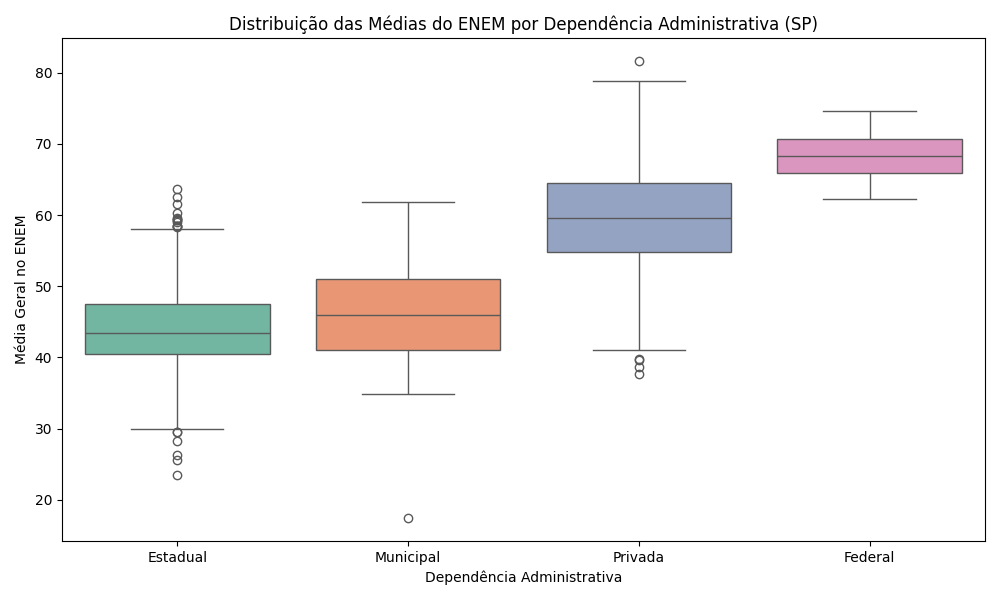
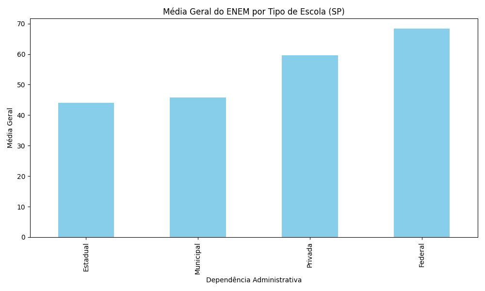

Neste projeto, utilizei o teste ANOVA para avaliar se há diferença significativa no desempenho médio dos alunos no Enem 2015 de acordo com o tipo de administração escolar (Federal, Estadual, Municipal ou Privada), considerando apenas escolas do município de São Paulo.
Em outras palavras: eu quis entender se o tipo de escola realmente afeta a média dos alunos. Será que escolas privadas têm desempenho melhor que escolas públicas? Esse teste estatístico ajuda a responder essa pergunta.
Os dados foram obtidos do conjunto "Microdados do Enem por Escola 2015", publicado pelo INEP. Após filtrar apenas as escolas da cidade de São Paulo, utilizei a coluna NU_MEDIA_TOT para representar o desempenho geral.
A análise foi feita com o teste ANOVA da biblioteca scipy, que avalia se as médias dos grupos comparados são significativamente diferentes entre si.
Distribuição das médias por tipo de escola (Boxplot):
Médias gerais por tipo de escola:
Esse resultado indica com altíssima confiança estatística que existem diferenças reais entre os tipos de escola.
Em outras palavras: os tipos de escola não têm o mesmo desempenho. Escolas federais e privadas, por exemplo, costumam ter notas mais altas que as municipais ou estaduais.
Com essa análise, consegui mostrar como o tipo de administração escolar pode influenciar os resultados dos estudantes no Enem. Essas informações podem apoiar decisões de políticas públicas e levantar discussões sobre equidade no sistema educacional.
← Voltar ao início